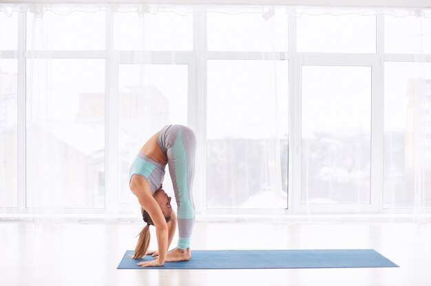

Yoga is a powerful tool for managing stress and promoting relaxation. Certain poses are particularly effective in calming the mind, reducing tension, and encouraging a deep sense of peace. Here’s a detailed guide to some of the best yoga poses for stress relief and relaxation:
- Child’s Pose (Balasana)

- How:Kneel, sit back on heels, fold forward with forehead on the mat, arms extended or by sides.
- Benefits: Calms the mind, stretches back and hips.
- Downward-Facing Dog (Adho Mukha Svanasana)

- How:From hands and knees, lift hips up and back, straightening legs.
- Benefits: Stretches body, relieves tension in back and neck.
- Forward Fold (Uttanasana)

- How: Stand, fold forward from hips, let head and arms hang.
- Benefits: Relieves back tension, calms the nervous system.
- Legs Up the Wall (Viparita Karani)
- How: Lie on back, legs up against a wall, arms by sides.
- Benefits: Reduces leg swelling, promotes relaxation.
- Cat-Cow Pose (Marjaryasana-Bitilasana)
- How: On hands and knees, alternate between arching back (Cow) and rounding spine (Cat).
- Benefits:Warms up spine, reduces back tension.
- Seated Forward Bend (Paschimottanasana)
- How: Sit with legs extended, fold forward toward feet.
- Benefits: Stretches back and hamstrings, calms the mind.
- Corpse Pose (Savasana)
- How: Lie on back, legs extended, arms at sides, focus on breathing.
- Benefits: Deep relaxation, integrates yoga practice benefits.
- Bridge Pose (Setu Bandhasana)
- How: Lie on back, lift hips, clasp hands under back.
- Benefits: Stretches chest and spine, reduces stress.
- Reclining Bound Angle Pose (Supta Baddha Konasana)
- How: Lie on back, feet together, knees apart.
- Benefits: Opens hips, promotes relaxation.
- Three-Part Breath (Dirga Pranayama)
- How: Sit, inhale deeply into belly, ribs, chest; exhale fully.
- Benefits: Calms the mind, enhances oxygen flow.
- Tips for Effective Practice:
- Consistency: Practice these poses regularly to experience long-term stress relief.
- Breathing: Focus on deep, mindful breathing to enhance relaxation and reduce stress.
- Adaptation: Modify poses with props like blankets, bolsters, or blocks if needed to accommodate your body and comfort level.
- Mindfulness: Pay attention to how each pose makes you feel and adjust as necessary to ensure a sense of ease and relaxation.
Incorporating these poses into your routine can help create a more balanced and serene state of mind, making it easier to manage stress and achieve relaxation.